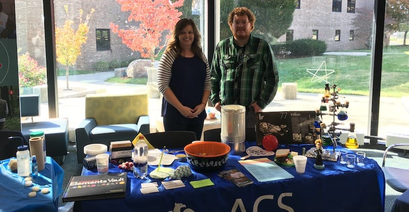

Syllabus
Here is the most recent syllabus (SP23) for CHEM 1142.Old exams and answers are listed below.
Hint: the best way to use these practice exams is to study for the exam, print-off and take one of the exams under exam conditions, and then grade yourself using the answers. Studying for the new exams by reviewing the old exams is not recommended!
Spring 2019 Exams
Exam 1 (Answers)
Exam 2 (Answers)
Exam 3 (Answers)
Exam 4 (Answers)
Spring 2017 Exams
Exam 1 (Answers)
Exam 2 (Answers)
Exam 3 (Answers)
Exam 4 (Answers)
Spring 2015 Exams
Exam 1 (Answers)
Exam 2A (Answers)
Exam 3 (Answers)
Exam 4 (Answers)
Spring 2013 Exams
Exam 1 (Answers)
Exam 2 (Answers)
Exam 3 (Answers)
Exam 4 (Answers)
Final Exam Information
The final exam in Chem 1142 is an ACS standardized exam, covering material from chapters 1 through 21 of our textbook. The SSU chemistry club sells a study guide for this exam. I’ve prepared some notes on the exam and the grading curve. The ACS has some useful tips on taking their standardized exams too.Some exams with a similar format to the ACS final are located on this webpage. (ACS High School Olympiad.)
Also, the New York Regents high-school exams are at a similar difficulty to the ACS final.
If you'd like to practice material mainly from CHEM1141, and a little from CHEM1142... but at a high-school level... the state of Virginia has a nice little multiple choice exam generator that you can try.